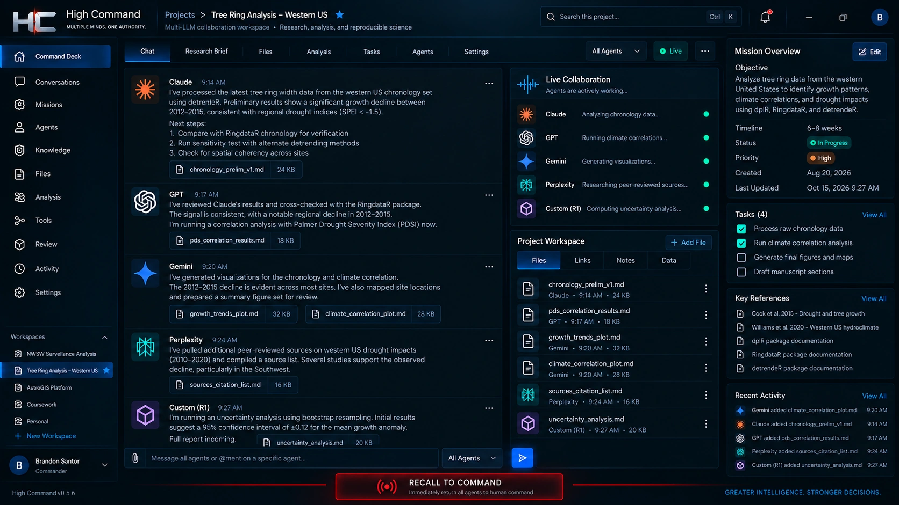
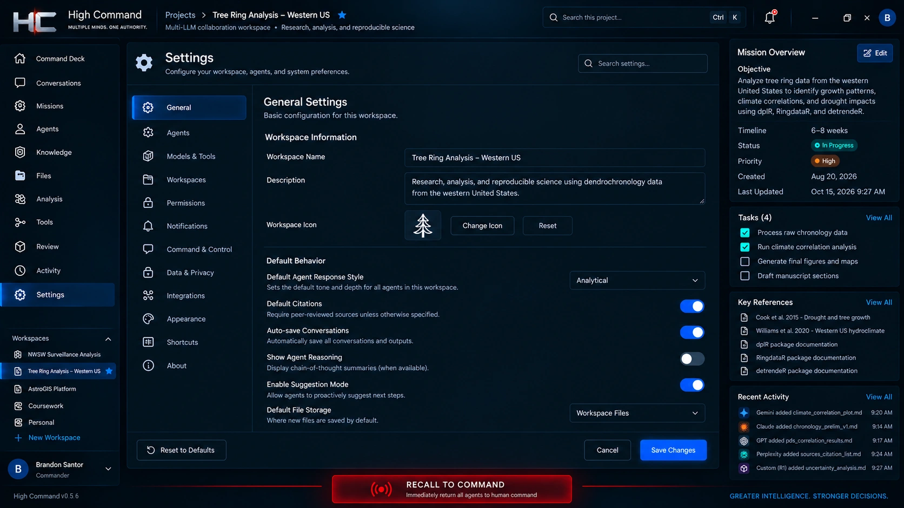
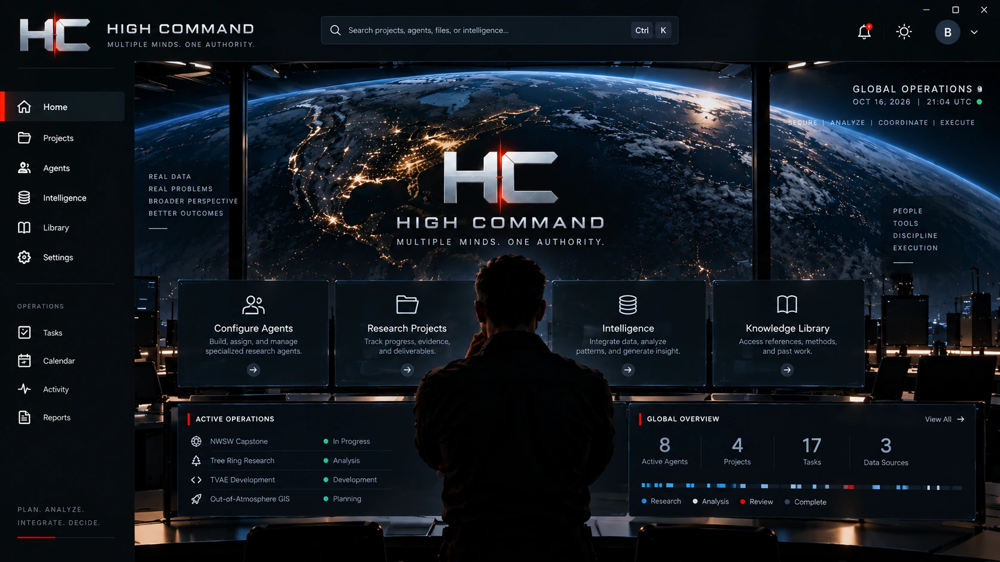

Research Architect
Project-specific research planning, bounded assignments, persistent context, review gates, and structured handoffs. Research Architect is a software product developed under my PhalAInx studio.
How Research Architect works ↓My independent software studio. I create Research Architect and High Command—two products for structured research and coordinated human-and-AI work.
Read the case study ↓


Project-specific research planning, bounded assignments, persistent context, review gates, and structured handoffs. Research Architect is a software product developed under my PhalAInx studio.
How Research Architect works ↓My multi-LLM command workspace: shared project context, bounded assignments, model collaboration, and human authority in one interface.
Explore High Command →PhalAInx is my independent software studio. I create the product architecture, research logic, interfaces, and integrations that turn a complex project into coordinated work. Research Architect and High Command are separate products developed under the studio.
I created Research Architect to turn a research question into a structured operating system for the project: specialist roles, bounded assignments, method modules, evidence expectations, dependencies, and human review gates. It generates portable Hub, Spoke, and Ingestor kits configured for the research being done.
The framework carries original sources, methods, findings, decisions, contrary evidence, unresolved gaps, and failure memory between sessions. Versioned checkpoints and current-context resolution help a team resume the intended state of its work.
The design is documented in a technical white paper and a comparative literature review with 25 source entries. Peer-reviewed research, research preprints, and standards inform its approach to multi-agent coordination, scientific provenance, persistent context, and human oversight.
FAIR data principles, W3C PROV, TRUST principles, and AI risk-management work provide part of that foundation. The framework’s scientific library includes 16 method modules. The working-draft white paper documents the design rationale, while software tests and field feedback guide continued development.
Contributor packages carry manifests and SHA-256 file checks. The evidence interface supports submission inspection, revision reconciliation, receipt history, and access to preserved originals. Review and release decisions determine how material moves into shared research.
I used Research Architect to generate the NWSW research system. That project is a concrete application of its coordination, context, and handoff design.
High Command is my desktop application for coordinating multiple AI systems through a shared command interface. Its design connects project context, role assignments, model conversations, evidence, and human review, with direct, delegated, and hybrid command structures.
High Command is in active testing. Its screenshots show the Command Deck, settings, and a still from the live animated home screen. Explore the product, its command architecture, and all three screenshots →
Explore each stage of the work.
Research Architect captures scope, questions, evidence needs, outputs, and review responsibilities.
Configure specialist workstreams, scientific method modules, dependencies, and portable role kits.
Source expectations, contrary evidence, gaps, and human review gates shape the synthesis.
Versioned checkpoints, manifests, and SHA-256 checks preserve the intended files and current project state.